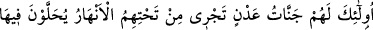
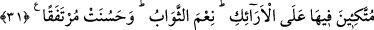
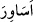

Çünkü mânevî dereceler ve Allah katındaki izzet ancak amelle kazanılır. Nitekim kudsî
bir hadiste şöyle buyrulmuştur: “Cennete benim lütfumla girin. Onu da amellerinize
göre paylaşın.”[177]
Berâ b. Âzib (r.a.)’ın şöyle dediği rivâyet edilmiştir: “Veda haccında Rasûlullah
(s.a.) Arafat’ta devesi üzerinde iken bir bedevî kalkıp: “Ben öğrenmek isteyen bir
adamım. Bana: “Îman edip de güzel davranışlarda bulunanlar (bilmelidirler ki) biz,
güzel işler yapanların ecrini zâyi etmeyiz” âyeti hakkında bilgi ver.” dedi. Rasûlullah
(s.a.):
“Ey a‘rabî, sen bu âyette bahsedilenlerden uzakta değilsin, onlar da senin uzağında
değiller. Onlar dört kişidir. Onlar şu yanımda duran Ebû Bekir, Ömer, Osman ve
Ali’dir. (r.anhüm.) Kavmine, bu âyetin işte bu dördü hakkında nâzil olduğunu bildir.”
Bu rivâyeti İmam Süheylî “Kitâbü’t-Ta‘rîf ve’l-i‘lâm’da zikretmiştir.
31. İşte onlara, zeminlerinden ırmaklar akan Adn cennetleri vardır. Onlar Adn
cennetlerinde tahtlar üzerine kurularak orada altın bileziklerle bezenecekler; ince
ve kalın ipekten yeşil elbiseler giyecekler. Ne güzel karşılık ve ne güzel kalma
yeri!
“İşte onlara,” yukarıda belirtilen yüce sıfatları hâiz olanlara “zeminlerinden
ırmaklar akan Adn cennetleri vardır.” İmam (Râzî) şöyle der: “Lügatte “adn”, ikâmet
demektir. Bu takdirde âyetin anlamının “onlar için ikâmet cennetleri vardır” şeklinde
olması câiz olur. “Adn” kelimesinin cennetteki muayyen bir yerin adı olması da câizdir.
Burası cennetin ortası ve en şerefli yeridir. Âyette geçen “cennât (cennetler)” lafzı
çoğuldur. Burada kasdedilenin “Rabb’inin makamından korkan kimseye iki cennet
var.” (er-Rahman, 55/46) ve “Bu ikisinin ötesinde iki cennet daha var.” (er-Rahman,
55/62) âyetlerinde bahsedilen cennetler olması mümkündür. Yine bu cennetlerin her
mükellefin derecesine göre nasîbine düşen bir cennet olması mümkündür.
Cennetlerin zeminlerinden şarap, süt, bal ve tatlı su ırmakları vardır. Çünkü dünyada
en değerli bahçeler, içlerinden ırmaklar akan bahçelerdir.
“Onlar Adn cennetlerinde tahtlar üzerine kurularak orada altın bileziklerle
bezenecekler;”
Bahru’l-ulûm’da der ki: “ Esâvir (bilezikler)” kelimesinin nekre oluşu, çokluk
ve tâzim içindir.”
Saîd b. Cübeyr şöyle demiştir: “Cennet ehlinden her biri, üçer bilezik takacak.